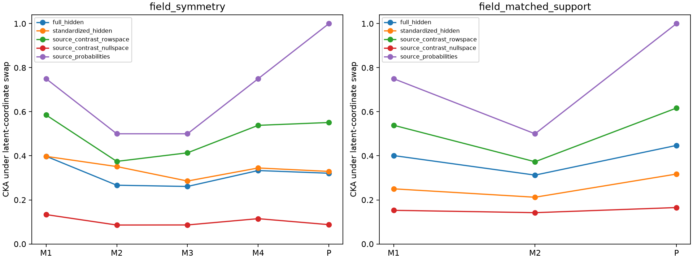

这是在观察原登记隐藏排序失败后追加的事后分析，共 72 个源模型。它不能替代原登记检验；全部表示方式与模型保留，未重训目标头或修改任何已保存的迁移预测。

将源头每个任务的类别权重减去类别均值，得到真正影响分类的权重行空间。用正交投影将隐藏表征分为该行空间和其零空间；零空间不影响源类别 logit 差。另报告源 logits、softmax 概率和硬答案编码。硬答案编码的 CKA 等于理想核是源准确率 100% 的直接后果，不是新的学习机制发现。
| 源实验 | 表示方式 | 满足登记三层排序 |
|---|---|---|
| field_matched_support | full_hidden | 4/9 |
| field_matched_support | standardized_hidden | 5/9 |
| field_matched_support | source_contrast_rowspace | 5/9 |
| field_matched_support | source_contrast_nullspace | 2/9 |
| field_matched_support | centered_logits | 5/9 |
| field_matched_support | source_probabilities | 9/9 |
| field_matched_support | decoded_one_hot | 9/9 |
| field_symmetry | full_hidden | 3/9 |
| field_symmetry | standardized_hidden | 3/9 |
| field_symmetry | source_contrast_rowspace | 4/9 |
| field_symmetry | source_contrast_nullspace | 1/9 |
| field_symmetry | centered_logits | 1/9 |
| field_symmetry | source_probabilities | 9/9 |
| field_symmetry | decoded_one_hot | 9/9 |
给隐藏各维乘正数 D，同时给源头对应权重列乘 D⁻¹。可直接通过 LayerNorm 的仿射参数实现；分类输出保持不变。八个固定尺度变换下，每个模型的原始 CKA 最大减最小，平均为 0.1743。源输出误差和实际模型参数检查已保存。
本次目标冻结读出使用支持集逐维标准化。在没有触及标准差下限时，正尺度变换被标准化精确抵消。这里用固定 25 个输入检查了该等价关系；没有重新拟合目标头。原始 CKA 和未标准化的字符方差比例会受尺度影响，不能仅凭它们的数值推出读出能力变化。